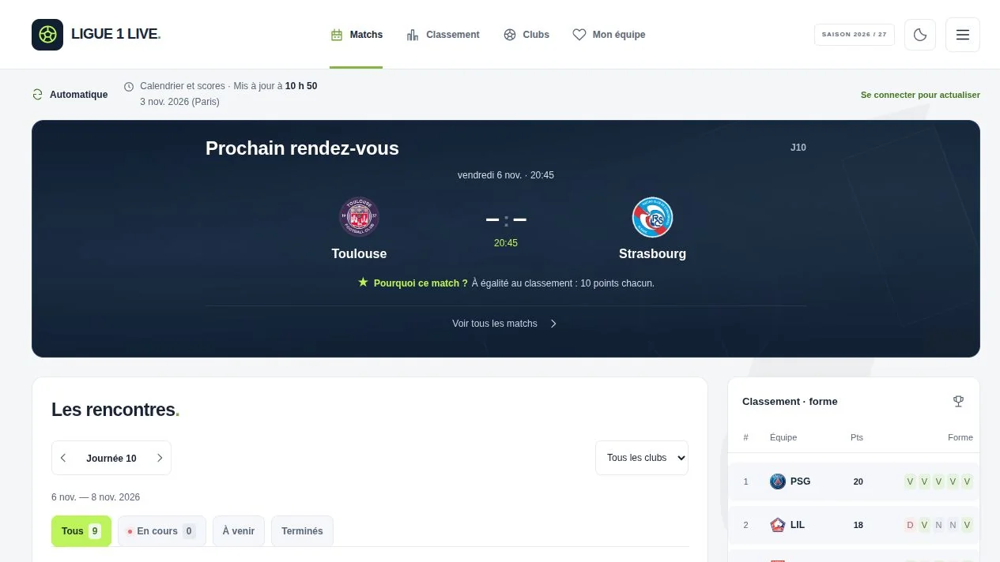
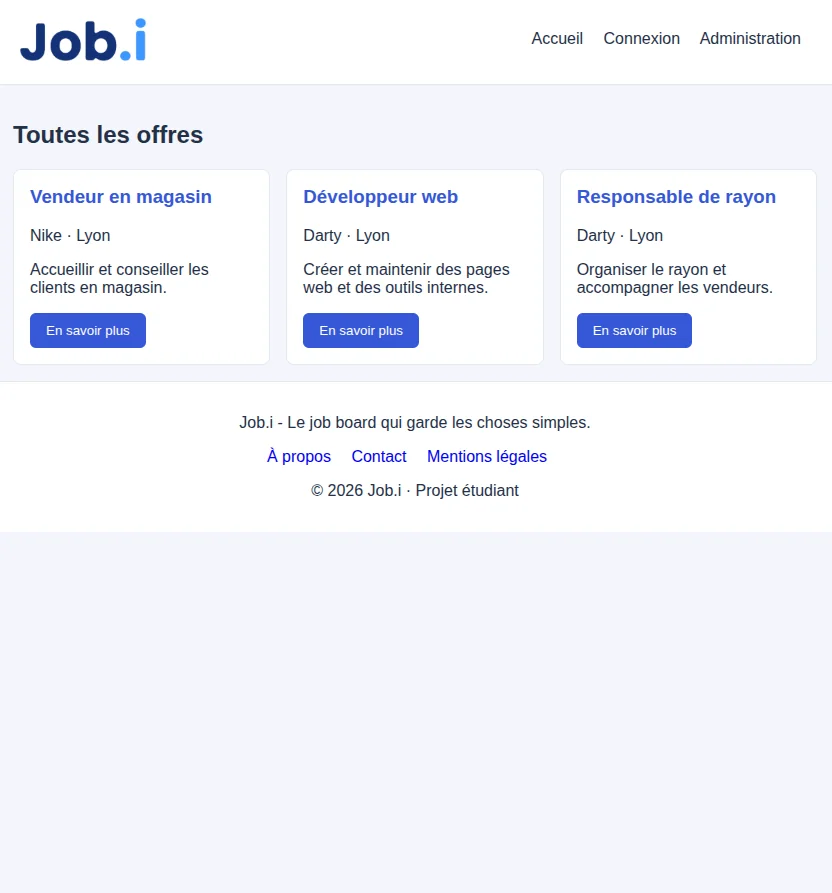

Comprendre un besoin.
Construire une solution.
Avancer en équipe.
Après le commerce et le management, je construis mon parcours dans l’informatique à Epitech Lyon. Un nouveau cap, avec la même énergie et le goût du collectif.
Découvrir mon parcoursPROJETS SÉLECTIONNÉS

Ligue 1 Live
Matchs, résultats et classement de Ligue 1.
Vue 3 · Laravel · API
Projet personnel

Job Board
De l’offre d’emploi à la candidature.
PHP · Laravel · MySQL
Projet Epitech en binôme